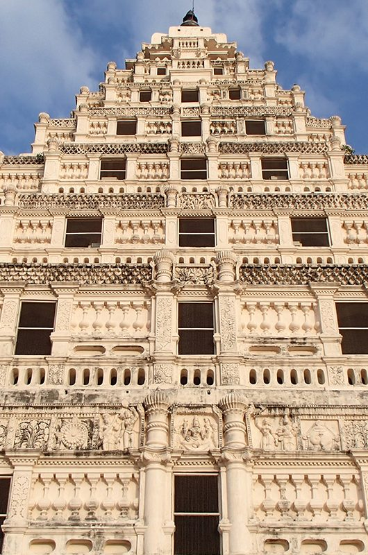
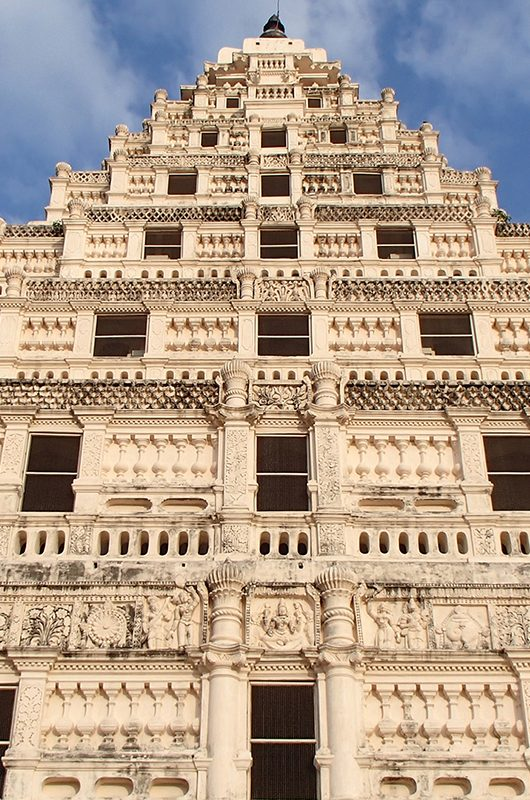

Thanjai Temple
Brihadeeshwara Temple (Peruvudaiyar Kovil) is a Hindu temple dedicated to Shiva located in Thanjavur in the Indian state of Tamil Nadu. It is also known as Periya Kovil, RajaRajeswara Temple and Rajarajesvaram. It is one of the largest temples in India and is an example of Dravidian architecture during the Chola period. Built by emperor Raja Raja Chola I and completed in 1010 AD, the temple turned 1000 years old in 2010. The temple is part of the UNESCO World Heritage Site known as the “Great Living Chola Temples”, with the other two being the Brihadeeswarar Temple, Gangaikonda Cholapuram and Airavatesvara temple. The temple stands amidst fortified walls that were probably added in the 16th century. The vimanam (temple tower) is 216 ft (66 m) high and is the tallest in the world. The Kumbam (the apex or the bulbous structure on the top) of the temple is carved out of a single rock and weighs around 80 tons. There is a big statue of Nandi (sacred bull), carved out of a single rock measuring about 16 ft (4.9 m) long and 13 ft (4.0 m) high at the entrance. The entire temple structure is made out of granite, the nearest sources of which are about 60 km to the west of temple. The temple is one of the most visited tourist attractions in Tamil Nadu.
 
